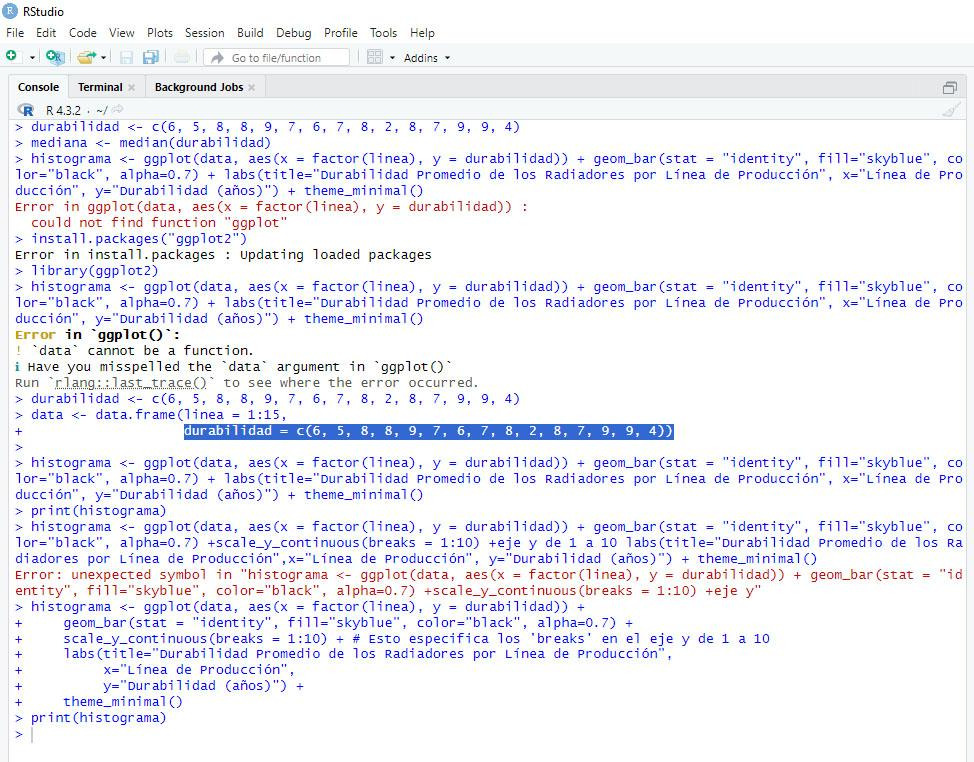
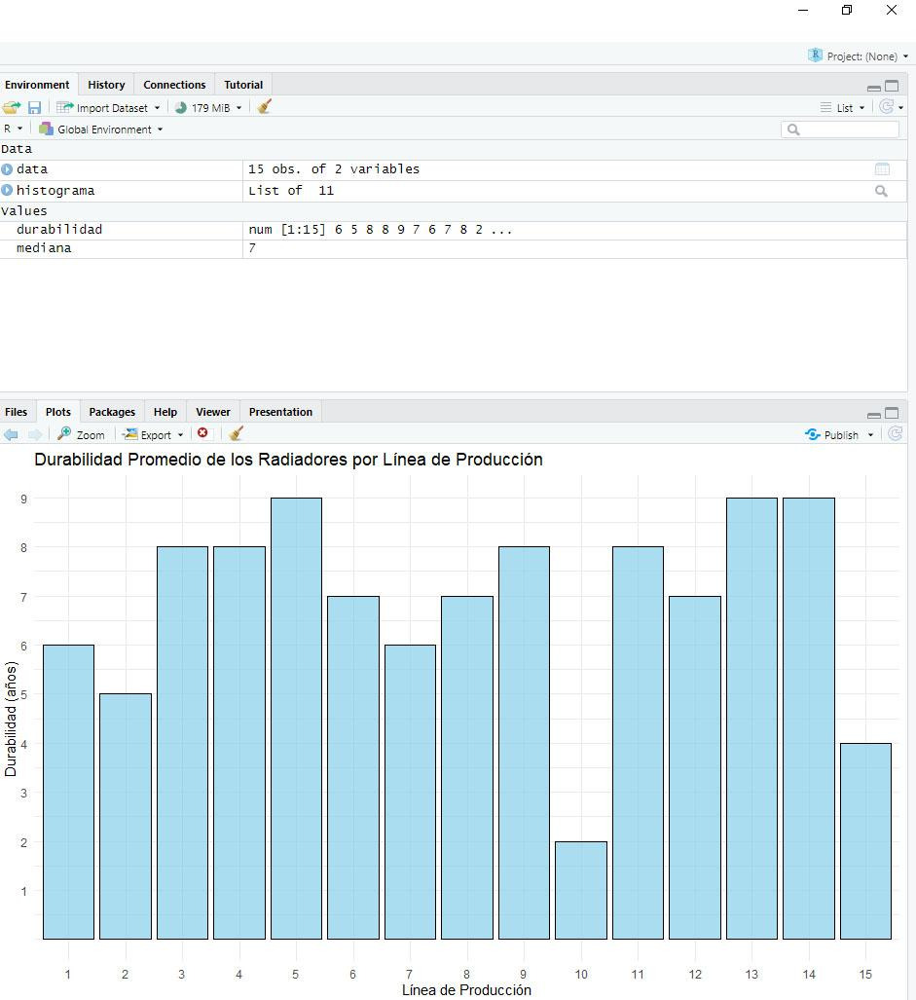

Q1: (1×20)/4 = 5,25 → promedio (28+29)/2 = 28,5 → 29 años. El 25% de los empleados tiene 29 años o menos.
Q2: (2×20)/4 = 10 → promedio (34+37)/2 = 35,5 → 37 años. El 50% de los empleados tiene 37 años o menos.
Q3: (3×20)/4 = 15 → promedio (52+53)/2 = 52,5 → 53 años. El 75% de los empleados tiene 53 años o menos.
Ejercicio 2 — Cuartil, decil y percentil (peso en gramos)
A. Primer cuartil: Posición K·n/4 = 1·463/4 = 115,75 → ≈ 333,825 g. El 25% de las unidades pesa menos de 333,825 g.
B. Séptimo decil: Posición K·n/10 = 7·463/10 = 324,1 → ≈ 540,59 g. El 70% de las unidades pesa menos de 540,59 g.
C. Percentil 30: Posición K·n/100 = 30·463/100 = 138,9 → ≈ 358,41 g. El 30% de las unidades pesa menos de 358,41 g.
Ejercicio 3 — Varianza y desviación estándar (precio gasolina)
Precio medio = 1,3566 €. Varianza y desviación estándar calculadas sobre 400 estaciones.
% desviación estándar = (0,07329 / 1,356) × 100 = 5,4%. La desviación es relativamente baja: los precios están agrupados alrededor de la media, lo que sugiere poca variabilidad.
Ejercicio 4 — Varianza (peso animal)
Media = 53,5. Varianza = 167,34. Desviación estándar = 12,94.
% desviación estándar = (12,94 / 53,5) × 100 = 24%. La variabilidad de los pesos es significativa y debe considerarse para la capacidad de carga y habitabilidad del transporte.
Durabilidad media por línea: 1=6, 2=5, 3=8, 4=8, 5=9, 6=7, 7=6, 8=7, 9=8, 10=2, 11=8, 12=7, 13=9, 14=9, 15=4.
2.a: La línea 10 (durabilidad 2) tiene una calidad excesivamente baja respecto a las demás.
2.b: Grupos: 1-3 (media 6,33), 4-6 (media 8), 7-9 (media 7). El grupo 4-6 ofrece la mayor calidad.


Ejercicio 3 — T-Student (formación operarios)
Operarios tipo A (6): 26, 25, 43, 34, 18, 52.
Operarios tipo B (5): 23, 30, 18, 25, 28.
H₀: μ₁ − μ₂ = 0 (no hay diferencia significativa). H₁: μ₁ − μ₂ ≠ 0.
Se aplica t-test para muestras independientes. El valor t es pequeño y el p-valor supera 0,05 → no se rechaza H₀. No hay suficiente evidencia para afirmar que exista una diferencia significativa entre las horas dedicadas de ambos grupos.